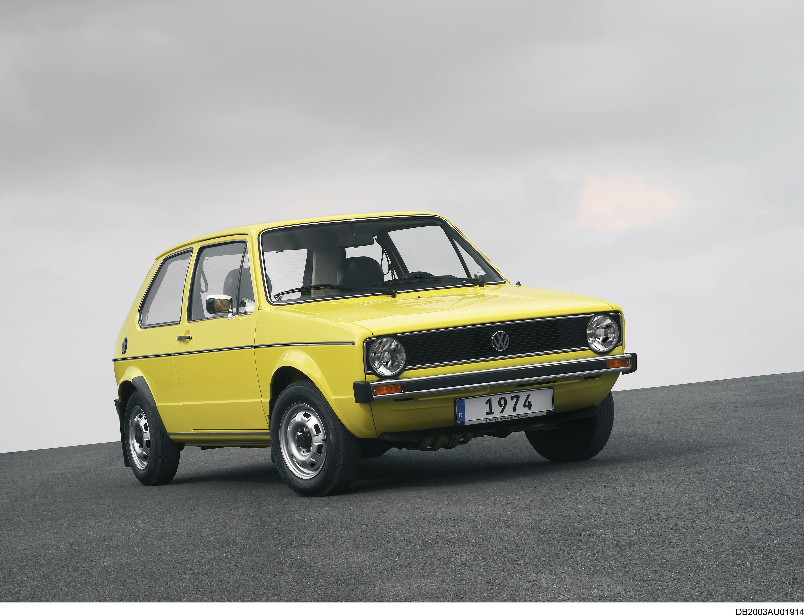
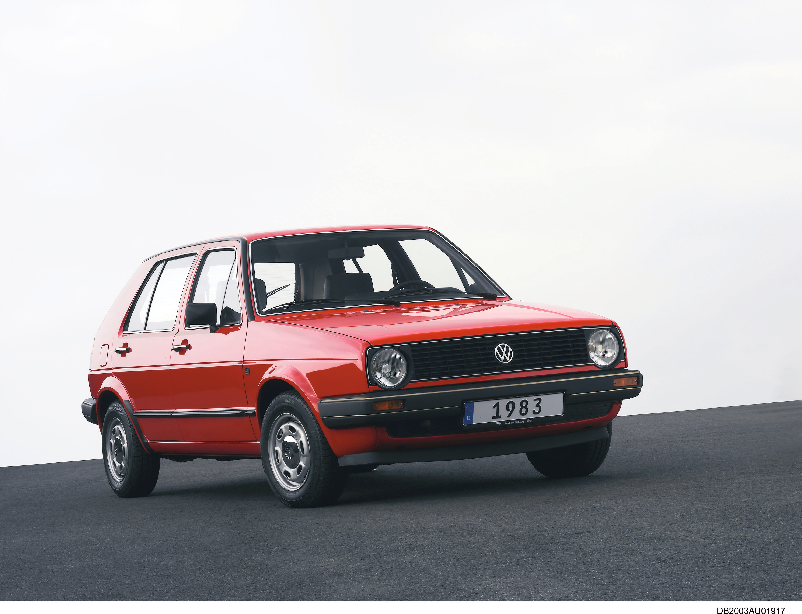
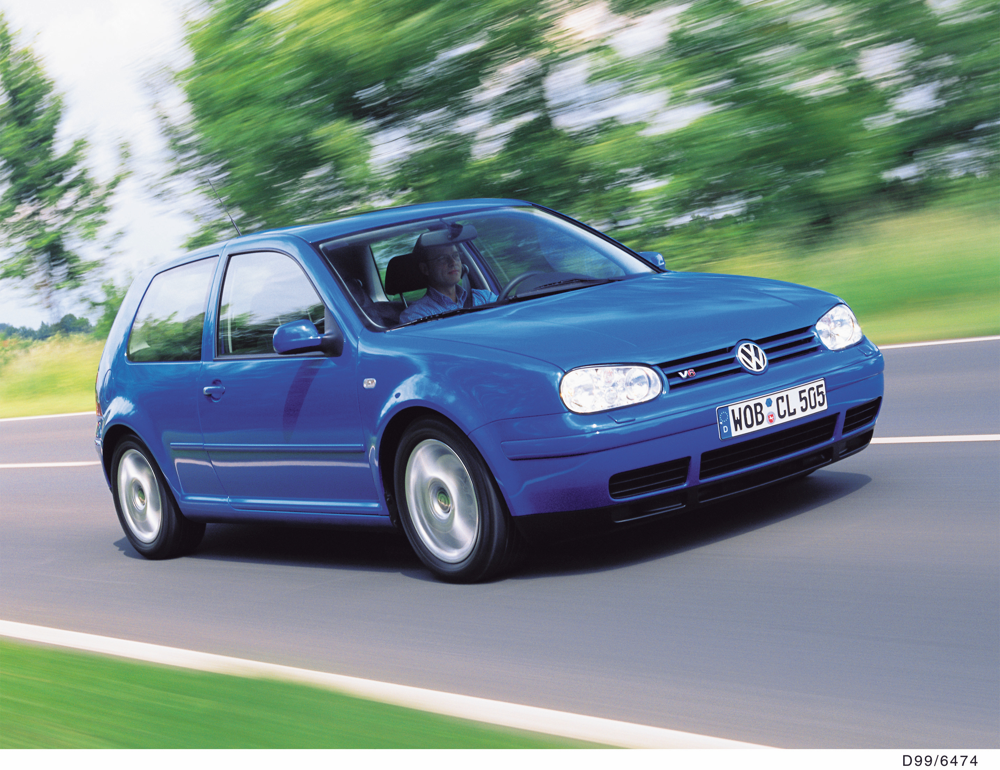
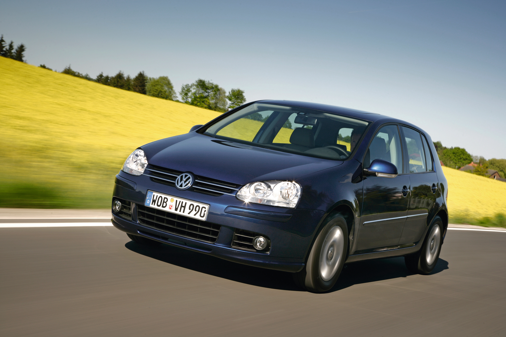
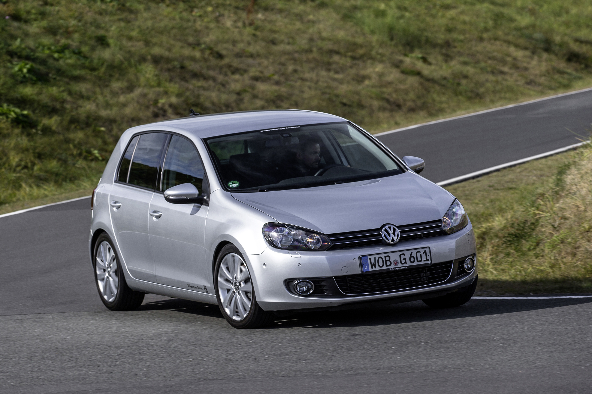

Volkswagen to end production of Golf for U.S. market
- Golf first sold in the U.S. in December 1974
- Nearly 2.5 million Golf family models sold in the U.S. market
- Production in Puebla, Mexico, ends in January
Herndon, VA — Volkswagen of America announced today that the critically-acclaimed Volkswagen Golf ended production for the U.S. market last week. Volkswagen expects that the model year 2021 Golf models built at the Puebla, Mexico plant will sustain sales of the affordable, European-designed hatchback through year end. The Golf family name will carry on in model year 2022 with the introduction of the all-new Mk 8 Golf GTI and Golf R, arriving this Fall.
“Over four decades, the Golf has delivered a great value to American drivers,” said Hein Schafer, Senior Vice President, Product Marketing and Strategy, Volkswagen of America, Inc. “It exemplified what Volkswagen does best—melding dynamic driving characteristics with purposeful packaging and unmatched quality. While the seventh-generation Golf will be the last of the base hatches sold here, the GTI and Golf R will carry its legacy forward.”
In the U.S., nearly 2.5 million Golf family models have been sold since 1974. A Golf model has earned a spot on Car and Driver’s 10Best list for the last 15 years in a row, and the current-generation Mk 7 Golf was named North American Car of the Year when it debuted for the 2015 model year.
The 2021 Golf is available in one well-equipped trim—the Golf TSI. It features a 1.4-liter turbocharged and direct-injection engine, which makes 147 horsepower and 184 pound-feet of torque. The TSI® engine is mated to either a six-speed manual gearbox or an eight-speed automatic transmission with Tiptronic®, and achieves EPA-estimated fuel economy of 29/39/33 (city/highway/combined) and 29/36/32 respectively.
The value-driven Golf TSI offers a host of standout features. On the exterior, LED DRLs and taillights give an unmistakable lighting signature, and automatic headlights with rain-sensing windshield wipers are standard, as are heated washer nozzles. Golf rides on 16-inch aluminum-alloy wheels, wrapped in 205/55 all-season tires and features KESSY® keyless access and a panoramic tilt-and-slide sunroof. Inside, premium materials are used throughout the driver-centric cabin, where leatherette steering wheel and seating surfaces and heated front seats are standard. Volkswagen Car-Net® and App-Connect keep drivers connected, and driver assistance features include Forward Collision Warning and Autonomous Emergency Braking with Pedestrian Monitoring (Front Assist), Blind Spot Monitor, and Rear Traffic Alert.
Pricing for the 2021 Volkswagen Golf with a standard six-speed manual transmission starts at $23,195. The eight-speed automatic transmission starts at $23,995. The destination charge for all Golf models is an additional $995.
Seven Generations of Golf (U.S. Model Years)
Golf I: MY 1975-1984
- First sold in December 1974 as “Rabbit” in the U.S.
- 1.5-liter engine with 70 hp
- GTI introduced in 1983 with 1.8-liter 90 hp engine
Golf II: MY 1985-1992
- Sold as “Golf” in the U.S.
- Dimensions grow by nearly 7 inches in length, 3 inches in wheelbase, and 2 inches in width
- Standard engine is revised 1.8-liter with 85 hp, GTI introduces 2.0-liter engine with 131 hp
- Catalytic converter, anti-lock braking system and power steering debut
Golf III: MY 1993-1999

- Design shifts to wedge shape
- Base powertrain is 2.0-liter with 115 hp, GTI goes to available 2.8-liter VR6® with 172 hp
- Front and side airbags debut, advances in body construction result in improved crash safety
- VR6® engine and cruise control offered for the first time
Golf IV: MY 1999.5-2005
- All-new design with flatter windshield, and roofline carried further back with steeper rear window
- Electronic stability control and side curtain airbags debut
- 1.8T engine introduced for GTI, bringing turbocharging to this generation of GTI
- R32 introduced for 2004 with 240 hp, six-speed manual, and 4MOTION all-wheel drive
Golf V: MY 2006-2009
- New multi-link rear suspension; rain-sensing wipers introduced
- Sold as “Rabbit” again in the US
- DSG® dual-clutch automatic transmissions debuts as an option for GTI and the standard transmission for R32; Bi-Xenon® headlights introduced on both models
- Base engine is 150 hp 2.5-liter, GTI moves to 200 hp 2.0-liter turbocharged direct-injection engine
- R32 reintroduced for 2008 with 250 hp
Golf VI: MY 2010-2014
- “Golf” name returns for the U.S.
- Prominent character line runs from headlights to taillights
- Base powertrain is 2.5-liter with 170 hp
- Golf R introduced for 2012, with the VR6 engine replaced by a 2.0-liter turbocharged direct-injection engine pushing 256 hp
Golf VII: MY 2015-2021

- Based on Modular Transverse Matrix (MQB) architecture
- Golf grows in size yet drops in weight, despite a plethora of new and upscale features
- Facelift in MY 2018 features included revised headlight and taillight designs, redesigned bumpers, and infotainment and driver assistance updates
- Base 1.8-liter TSI 170 hp engine replaces 2.5-liter to gain an EPA-estimated 6 mpg highway, later replaced by the 1.4-liter TSI engine in 2019
- GTI and Golf R powered by new versions of the 2.0-liter TSI engine, with up to 228 hp for GTI and up to 288 hp for Golf R (both achieved with premium fuel) Available driver-assistance technology includes Automatic Post-Collision Braking System, Forward Collision Warning, Park Distance Control
About Volkswagen
Founded in 1955, Volkswagen of America, Inc. is an operating unit of Volkswagen Group of America and a subsidiary of Volkswagen AG, with headquarters in Herndon, Virginia. Volkswagen’s operations in the United States include research and development, parts and vehicle processing, parts distribution centers, sales, marketing and service offices, financial service centers, and its state-of-the-art manufacturing facility in Chattanooga, Tennessee. The Volkswagen Group is one of the world's largest producers of passenger cars and Europe's largest automaker. Volkswagen sells the Arteon, Atlas, Atlas Cross Sport, Golf, Golf GTI, Jetta, Jetta GLI, Passat, and Tiguan vehicles through more than 600 independent U.S. dealers. Visit Volkswagen online at www.vw.com or media.vw.com to learn more.
“4Motion”, “Car-Net”, “DSG”, “KESSY”, “TSI”, “VR6”, “VW”, “Volkswagen”, all model names and the Volkswagen logo are registered trademarks of Volkswagen AG. “Bi-Xenon” is a registered trademark of Hella KGaA Hueck & Co. “Tiptronic” is a registered trademark of Dr. Ing h.c. F. Porsche AG. All other trademarks are the property of their respective owners.
This information and any vehicle specifications are preliminary and subject to change.
Features and technical data apply to models offered in the USA. They may differ in other countries.
All prices provided are the Manufacturer’s Suggested Retail Price and exclude destination, taxes, title, other options and dealer charges. Dealer sets actual price.
Always pay careful attention to the road, and do not drive while distracted.
When using KESSY keyless access or remote start, do not leave vehicle unattended with the engine running, particularly in enclosed spaces. See Owner’s Manual for further details and important warnings about the keyless ignition feature.
Not all App-Connect features are available on all operating systems. Standard text and data usage rates apply. App-Connect features require compatible device, operating system, and mobile apps. See mobile device and app providers for terms and privacy.
When downloading apps, standard message and data rates apply.
Car-Net Remote Access is available on most MY20 and newer vehicles, and are offered at no additional charge for 5 years from vehicle in-service date. Always pay careful attention to the road and do not drive while distracted. Certain services require trial or paid subscriptions, which may have their own terms and conditions. VW Car-Net requires cellular connectivity, availability of vehicle GPS signal, and acceptance of Terms of Service. Not all services and features are available on all vehicles. Standard text and data rates may apply for app and web features. Certain services may collect location and vehicle information. See Terms of Service, Privacy Statement, and other important information at www.vw.com/carnet.
Where stated, fuel economy values (mpg) are EPA estimates. See www.fueleconomy.gov for details. Your mileage will vary and depends on several factors including driving habits and vehicle condition.
Driver-assistance features are not substitutes for attentive driving. See Owner’s Manual for further details, and important limitations.